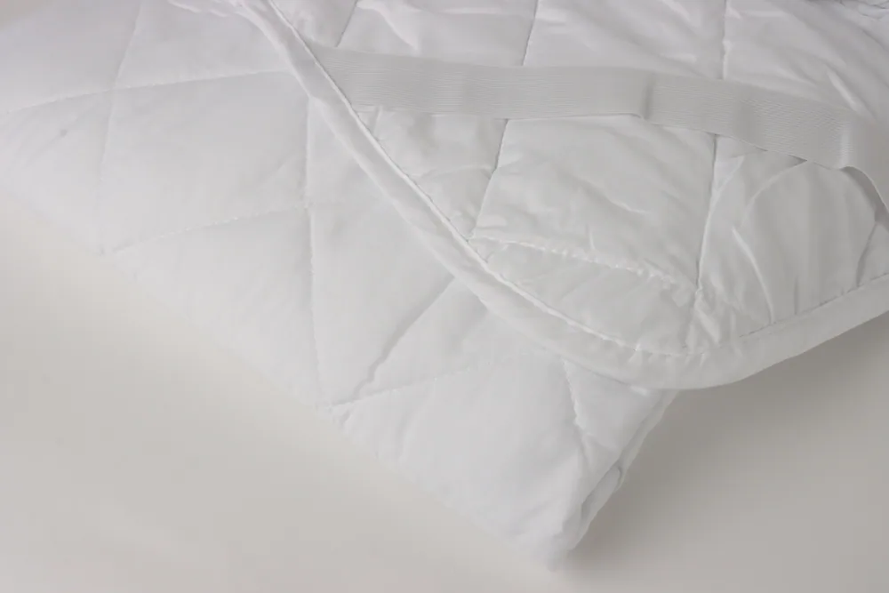
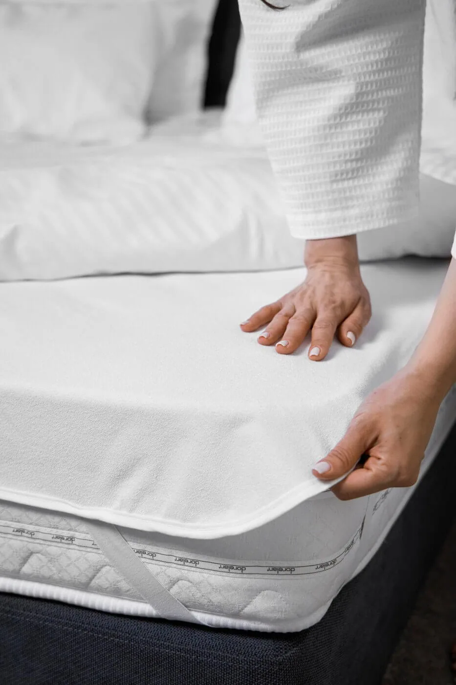

СтандартНаматрацники й топери · Стандарт
Наматрацник стьобаний синтепоновий
Базовий стьобаний шар для захисту й охайного вигляду ліжка.
Особливість
Проста конструкція закриває повсякденну потребу в змінному захисному шарі.
Захисний шар продовжує ресурс матраца, спрощує стандарти прибирання й допомагає коригувати відчуття спального місця без повної заміни основи.
Порівняйте матеріали й особливості виробів, оберіть розмір і колір та додайте потрібне до замовлення.

СтандартБазовий стьобаний шар для захисту й охайного вигляду ліжка.
Проста конструкція закриває повсякденну потребу в змінному захисному шарі.
Додатковий стьобаний шар між матрацом і простирадлом.
200 г/м² наповнення дають відчутніший комфорт, ніж базовий стьобаний наматрацник.

ПреміумМахрова поверхня з поліуретановою мембраною.
Поліуретанова мембрана захищає матрац від вологи під м’якою махровою поверхнею.
 Захист подушки
Захист подушкиОкремий знімний захисний шар для готельної подушки.
Знімний чохол захищає подушку й спрощує щоденний догляд.
Захист подушкиСтьобаний чохол для комплектації подушки Premium.
Стьобана поверхня доповнює комфорт подушки та допомагає зберігати її охайність.
Наматрацник переважно захищає; топер додатково змінює відчуття жорсткості й комфорту.
Кутові резинки або повний борт підбирають під висоту матраца та частоту заміни.
Режим визначають за складом чохла, наповнення і мембрани, якщо вона передбачена.
Залиште контакти — уточнимо сценарій використання, кількість і бажаний рівень, після чого підготуємо пропозицію.